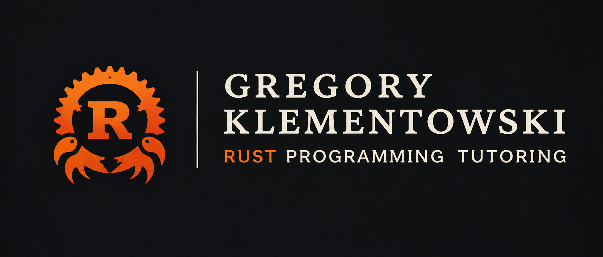

€40/ hour
One-to-one online lessonONE-TO-ONE TUITION · ONLINE
Rust you can
actually understand.
One-to-one Rust tutoring for secondary school pupils, university students and self-taught learners.
Whether you are new to Rust or ready to build on what you know, we work on safe, efficient code and solve problems at a pace that suits you.
LEARNING AT YOUR PACEPRACTICE FROM DAY ONE
 01 / 01
01 / 01Gregory KlementowskiYour guide to Rust↗
fn learning() → growth
01 MY APPROACH
Don’t just learn
to write code.
Learn to understand
how it works.
{ }
Good code starts with good questions. In our lessons, you do more than copy solutions: you learn how to work them out for yourself.
See how lessons work ↘02 WHAT WE CAN COVER
From your first println!
to the tricky “why?”
We can start from the beginning or focus on a specific problem. We choose what you need instead of rushing through a fixed syllabus.
01
Rust from the ground up
Your first steps, Rust syntax and finding your way around code.
02
Variables, types and functions
Mutability, types, scope and designing functions.
03
Structs and enums
Custom types, variants and modelling data.
04
Pattern matching
Pattern matching with match, if let and let else.
05
Ownership and borrowing
Ownership, borrowing and safe memory management.
06
References and lifetimes
References, lifetimes and making sense of compiler messages.
07
Traits and generics
Shared behaviour, type parameters and trait bounds.
08
Collections and iterators
Vec, HashMap, iterator adaptors and closures.
09
Error handling
Option, Result, propagating errors and clear APIs.
10
Testing and debugging
Unit tests, assertions and tracking down bugs.
11
Algorithms and data structures
Breaking a problem into steps and choosing a suitable representation.
12
Cargo and developer tools
Projects, dependencies, Clippy, Rustfmt and an introduction to async.
From strong foundations
to async
Ownership and good practices, asynchronous programming with Tokio, and data serialisation with Serde.
{ }We work with
your code
Help with Rust projects, setting up your environment, and installing and using Cargo — one step at a time.
</>Idiomatic code.
Practical tools.
Clippy and Rustfmt support idiomatic Rust code. Linux / UNIX can be covered as a supplementary topic when it is useful for your learning.
⌘↳
We will tailor the pace, schedule and topics to you. Tell me what you need.
03 LEARN BY DOING
Understanding
starts when you
run the code.
We write code together, see how the program behaves and work out why. Here is a small example: an iterator operating on borrowed data.
values borrowed data
src/main.rsRUST
01// We do not need to take ownership
02fn sum_of_squares(values: &[i32]) -> i32 {
03 values.iter()
04 .map(|n| *n * *n)
05 .sum()
06}
07
08let numbers = [1, 2, 3];
09let total = sum_of_squares(&numbers); // 14 Teaching exampleOWNERSHIP · ITERATORS
01 — 04OWNERSHIP · PATTERN MATCHING · ERROR HANDLINGRUST, STEP BY STEP
04 HOW DO LESSONS WORK?
A clear plan.
Your pace.
Every lesson has a clear goal, and we shape the plan together. We work calmly, in a friendly, supportive atmosphere, at a pace that suits your level.
We start with your goals
We talk about your experience, current level, availability and what you would like to achieve.
We choose a topic
We focus on the specific ideas you would like to work through.
We work with code
We solve exercises together and try ideas out in practice.
We explore the “why”
We break down how Rust works into clear, understandable concepts.
You practise independently
You get time to apply what you have learned and build confidence.
05 A LITTLE ABOUT ME
Rust↗LEARNING IN
PROGRESS
PROGRESS
In programming, every “why?” is a good place to start.
I am especially interested in Rust because it encourages precise thinking about how a program works. I continue to develop my own skills, and I know that difficult concepts take time. My teaching is practical and patient: we focus on understanding the ideas rather than memorising ready-made solutions. I tailor each lesson to your goals and pace.
Gregory KlementowskiRust programming tuition
“
REVIEWS
Hear it from
people who have learned with me.
You can read students’ reviews on my Korepetycje24 profile.
Read reviews on Korepetycje24 ↗OPENS IN A NEW TAB
06 YOUR NEXT STEP
Have a question?
Let’s write the first line.
Tell me what you are learning and where you would like help. We can work out together whether one-to-one tuition is right for you.
ONE-TO-ONE · ONLINE · IN ENGLISHBACK TO TOP ↑
